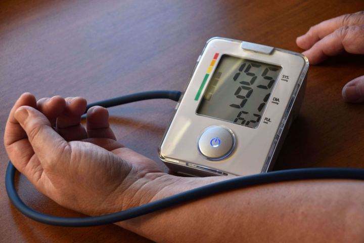
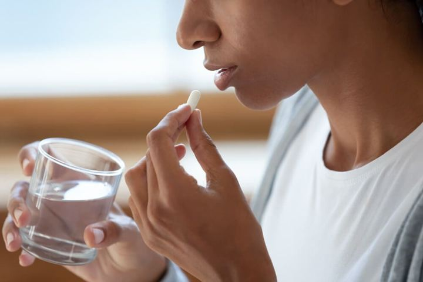
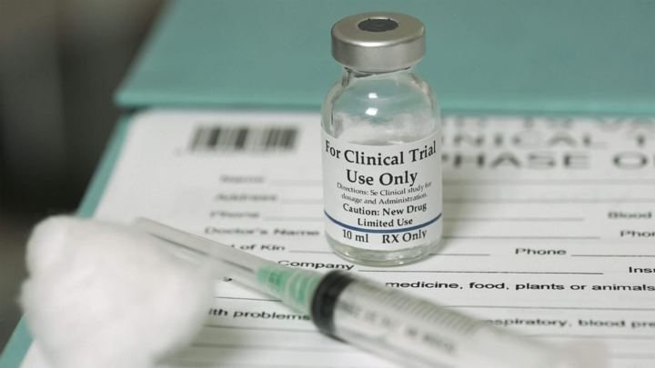
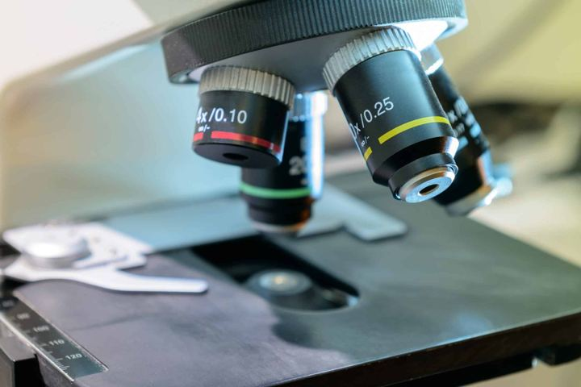
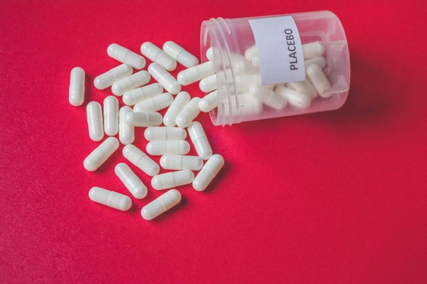

Our blog
Learn about clinical research
Articles from our team on how clinical trials work, what to expect, and research in South Florida.

What Is a Placebo and Should You Be Worried About Getting One?

What to Know Before Choosing Vaccine Clinical Trials

How Diversity in Clinical Trials Strengthens Future Treatments

Aesthetic Medicine Clinical Research in Palm Beach, FL
How Clinical Trials Are Revolutionizing Mental Health Treatment
Common Myths About Clinical Trials And The Facts
Understanding How Clinical Trials Are Changing Women’s Health
Clinical Trial Volunteers Shape Tomorrow’s Medicine
Unlock New Possibilities in Psoriasis Treatment with Altus Clinical Research
From Consent to Completion: A Patient’s Journey Through a Clinical Trial
Building Trust Through Engagement: The Altus Clinical Research Approach
Boosting Infant Health: The Role of Clinical Trials in Formula Development

High Blood Pressure Research Studies: Help Advance Hypertension Care
UTI Research Studies: Contribute to Advancements in Urinary Tract Infection
Altus Clinical Research – Hot Flash Study
Unlocking Medical Breakthroughs: Why Volunteering for Clinical Trials at Altus Clinical Research Matters
Advancing Personal Health through Clinical Trials
The Journey from Lab to Treatment: How Medical Research Becomes Standard Care
Screening Trials: Advancing Early Detection Methods for Better Health Outcomes
The Ethics of Medical Research: Balancing Progress and Patient Safety
Prevention Trials: How Research Aims to Stop Diseases Before They Start
Why Diversity Matters in Clinical Trials
How Summer Heat Affects Clinical Trial Participation in Lake Worth, Florida
How to Know If You Should Participate in a Clinical Trial
Unraveling the Mysteries of Medical Research at Altus Research, Lake Worth, Florida
Understanding the Impact of Seasonal Changes on Clinical Trials
How to Prepare for a Clinical Trial

Why is Medical Research Important?
Ethical Considerations for Clinical Trial Patients
How AI is Being Used in Medical Research
Evidence-Based Medicine and Clinical Trials
The Future of Clinical Trials
Addressing Myths About Clinical Studies
Clinical Trials Through the Years and How They’ve Changed
How to Decide If You Should Participate in a Medical Study
What is Informed Consent in Medical Studies?
Clinical Research Funding and How It’s Managed
How Personal Information is Protected in a Research Study
Clinical Trials VS Clinical Studies – What’s The Difference?
What to Expect When You Join a Research Study
Ways You Are Protected As A Participant in a Clinical Trial
How Long Do Pharmaceutical Clinical Trials Last?
Reasons to Participate in a Clinical Trial

What Happens When a Clinical Trial Ends?
Why We Need Clinical Trials
The Role of Clinical Trials in Pharmaceuticals
The Basics of Clinical Trials
How Clinical Trials Advance Medicine
The Placebo Effect in Clinical Trials: What to Know
Questions You Should Ask Before Participating in a Clinical Trial
How Do I Join a Research Study?
How Covid-19 Has Changed Clinical Trials
The Importance of Diversity in Clinical Trials
What Are the Rights of Clinical Trial Participants?
What Are Clinical Trials?
What To Consider Before Participating In Clinical Research
The Importance of Clinical Trials
How The Rise of Virtual Studies is Impacting Research
Clinical Trials: Benefits, Risks, and Safety
Phases of Clinical Trials and What They Mean
Finding a Clinical Trial
Clinical Trials: Overview
What is a Randomized Controlled Trial?

How to Design a Clinical Trial
